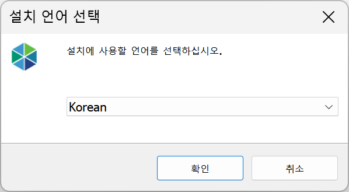

1-1. 설치
1-1. 설치
Source: https://www.sweeper.or.kr/etc/manual/11.html
1-1. 설치
1. 개요 ››


SWeeper 시스템 통신/암호화 구성도

서버 권장 사양정보
| 장비 | OS | CPU | RAM | HDD |
| ~ 150대 | Windows Server 2022 | Intel xeon (4core) 3.0 GHz 이상 | 8GB 이상 | 100GB이상 |
| ~ 500대 | Windows Server 2022 | Intel xeon (4core) 3.0 GHz 이상 | 8GB 이상 | 100GB이상 |
| ~ 1000대 | Windows Server 2022 | Intel xeon (8core) 3.0 GHz 이상 | 16GB 이상 | 200GB이상 |
| ~ 3000대 | Windows Server 2022 | Intel xeon (8core) 3.0 GHz 이상 | 32GB 이상 | 300GB이상 |
| ~ 이상 | Windows Server 2022 | Intel xeon (4core) 3.0 GHz 이상 | 32GB 이상 | 300GB이상 |
SWeeper 서버 프로그램의 경우 지원담당 엔지니어를 통해서만 설치 가능합니다. 사용자는 에이전트를 설치하고 관리자는 Manager 프로그램을 설치합니다.
관리콘솔 프로그램은 .NET FRAMEWORK 4.8을 지원하는 Windows 7 SP1+ 이상의 OS에서만 설치/운영이 가능합니다.
- 설치 언어 선택
사용 언어를 선택한 뒤 확인 버튼을 클릭합니다.

- 설치경로 설정
설치경로를 설정하는 화면 입니다. 변경사항이 없을 경우 다음 버튼을 클릭합니다.

- 시작메뉴 폴더 설정
시작 메뉴폴더 위치를 설정합니다. 변경사항이 없을 경우 다음 버튼을 클릭합니다.

- 설치 준비 완료
설치를 위한 설정 작업이 완료되었습니다. 설정된 내용이 확인되면 설치 버튼을 클릭합니다.

- 설치 진행
설치 진행 상태가 표시되며 완료되기 까지 잠시만 기다려 주십시오.

- 설치 완료
설치가 완료되었습니다. 완료 버튼을 클릭하시면 됩니다.

© Copyright SWeeper Inc.. All Rights Reserved